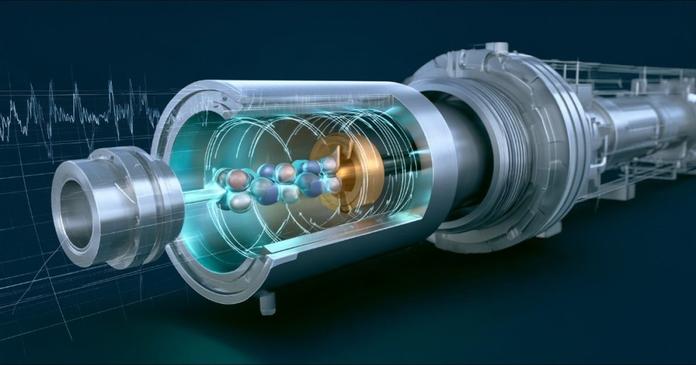

Коллайдер NICA сможет часами сохранять пучок дейтронов с циклически колеблющейся поляризацией
Физики ОИЯИ, МФТИ и Института современной физики Китайской академии наук с коллегами рассчитали, как долго можно сохранять в ускорителе поляризацию дейтронных пучков при непрерывном изменении направления спинов.
По их оценке, на комплексах Нуклотрон / NICA и HIAF она может сохраняться час и дольше, потенциально несколько часов.
Это открывает возможности для поиска с высокой чувствительностью слабых сигналов новых взаимодействий, в частности с потенциальным приложением к разгадке происхождения барионной асимметрии Вселенной, описать которую Стандартная модель электрослабых взаимодействий не в состоянии.